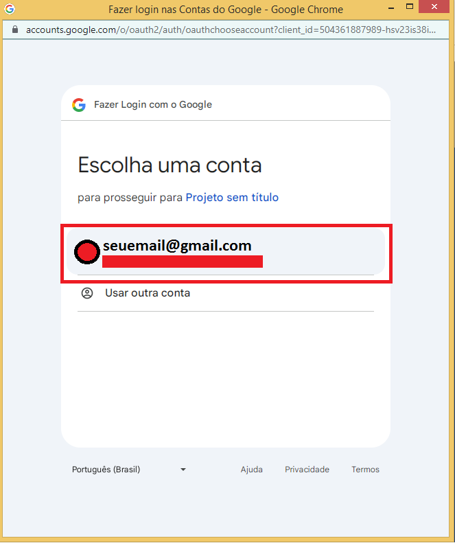
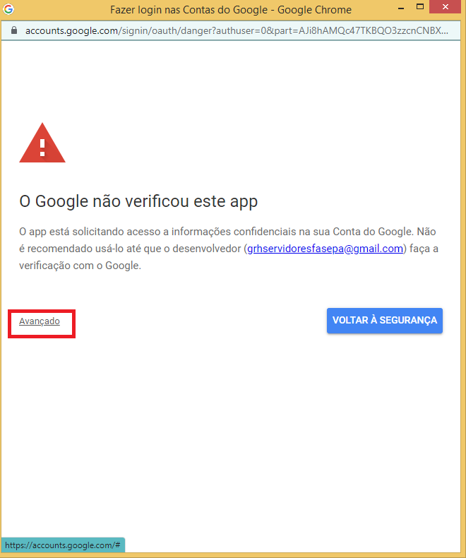
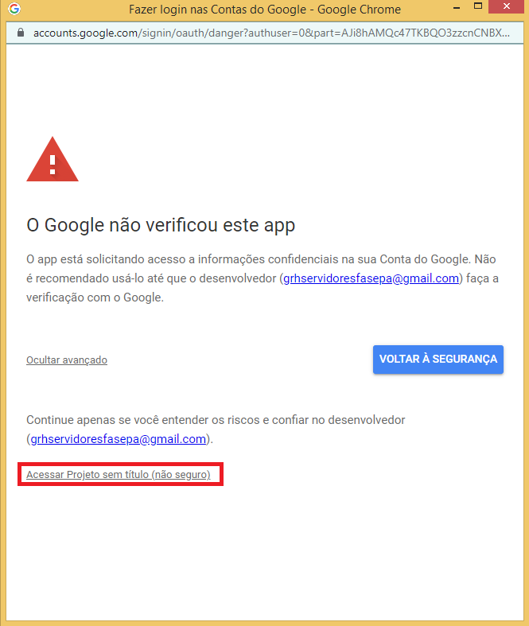

1. Introdução
Este manual tem como objetivo orientar o uso do sistema de cadastro de servidores.
2. Primeiro Acesso
Para o primeiro acesso, utilize seu email. Você será redirecionado para configurar seu primeiro acesso ao código.
  3. Botão Pesquisar
 Este botão permite localizar registros existentes. Digite o nome ou matrícula e clique em “Pesquisar”.
Este botão permite localizar registros existentes. Digite o nome ou matrícula e clique em “Pesquisar”.
4. Botão Limpar
 Utilize para limpar os campos preenchidos no formulário atual. Ideal para iniciar uma nova busca ou cadastro.
Utilize para limpar os campos preenchidos no formulário atual. Ideal para iniciar uma nova busca ou cadastro.
5. Botão Histórico
 Abre o histórico de registros vinculados ao servidor selecionado, permitindo visualização de alterações e movimentações.
Abre o histórico de registros vinculados ao servidor selecionado, permitindo visualização de alterações e movimentações.
6. Botão Cadastro
 Preencha todos os campos obrigatórios e clique em “Cadastro” para adicionar um novo servidor ao sistema.
Preencha todos os campos obrigatórios e clique em “Cadastro” para adicionar um novo servidor ao sistema.
7. Botão Editar
 Após pesquisar um servidor, clique em “Editar” para modificar os dados existentes. Lembre-se de salvar após as alterações.
Após pesquisar um servidor, clique em “Editar” para modificar os dados existentes. Lembre-se de salvar após as alterações.
8. Suporte
Em caso de dúvidas, entre em contato com a equipe técnica pelo e-mail: niitfasepa@gmail.com.